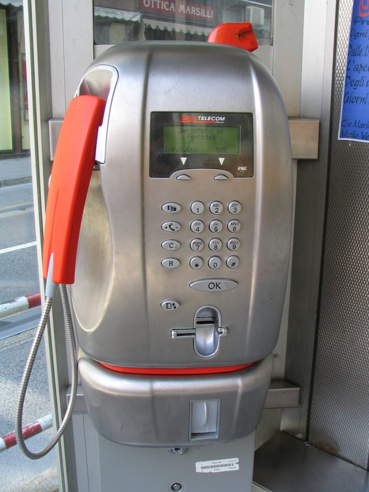
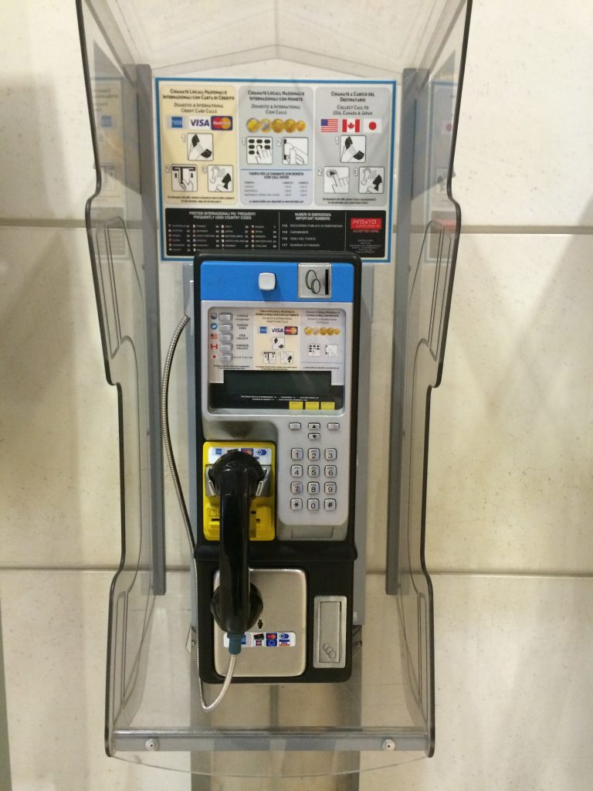

A public phone that works with either coins or prepaid cards
The most recent public phones are enabled for credit card use and have a display that tells you the cost of the call (chiamata). The location of public phones can be found online by inserting the name of the city and an address. You will notice though that many are not active anymore.
Public phone accepting credit cards and coins
{This is an excerpt from chapter 10 “Telephones, computers and Wi-Fi” of the eBook “Italy from the Inside. A native Italian reveals the secrets of traveling in Italy”. To buy our eBook click here}